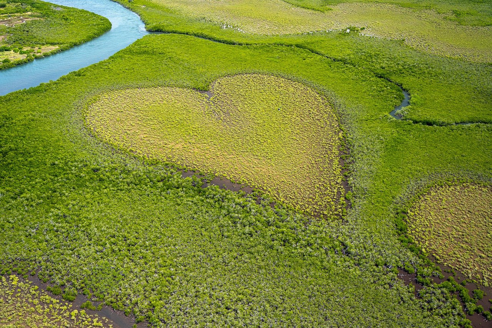

Transition numérique et écologique
Transition numérique et écologique
SCC Une entreprise au coeur de l'environnement
L’écologie est une valeur fondamentale de notre entreprise.
SCC France s’engage activement dans la transition écologique en alignant ses services sur les normes environnementales les plus strictes.

Dans un contexte de problème climatique important lié au réchauffement climatique et aux émissions de carbone, chez SCC France la responsabilité sociétale des entreprises (RSE) est au centre des priorités. 
Nos actions sont diverses et variées. Nous collaborons étroitement avec FRET 21 pour réduire de manière significative
les émissions de carbone liées au transport de nos installations.
Un autre point, notre partenariat avec HP qui nous permet de distribuer des ordinateurs à très faible consommation
énergétique au sein de notre entreprise.
Un engagement écologique reconnu par Ecovadis: Nous sommes classés parmi le top 1% attestant de notre performance
et cela pour la cinquième année de suite.

Nous sommes engagés pour réduire notre consommation d’électricité de nos serveurs et toutes nos installations informatiques. Cela a pour but d’offrir à nos clients la possibilité de s’investir dans la lutte contre le réchauffement climatique en réduisant leurs émissions et tout en renforçant leur image écoresponsable.